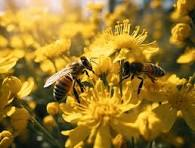
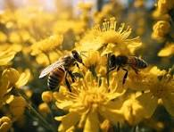

See Bee
Bem-vindo ao See Bee! Aqui celebramos a incrível importância das abelhas para o nosso ecossistema,
a biodiversidade e a produção de alimentos. Descubra curiosidades, informações e imagens fascinantes
dessas pequenas maravilhas voadoras que mantêm o mundo em harmonia.
A inseminação artificial de abelhas é uma técnica utilizada para melhorar a reprodução e a genética das colônias.
Este processo envolve a coleta de esperma de um zangão e sua introdução em uma rainha, permitindo a produção de
descendentes com características desejáveis, como resistência a doenças e maior produtividade.
Essa prática é fundamental para a apicultura moderna e ajuda a garantir a saúde e a sustentabilidade das populações de abelhas.
Inseminação Artificial de Abelhas
A inseminação artificial de abelhas é uma técnica utilizada para melhorar a reprodução e a genética
das colônias. Este processo envolve a coleta de esperma de um zangão e sua introdução em uma rainha,
permitindo a produção de descendentes com características desejáveis, como resistência a doenças e
maior produtividade. Essa prática é fundamental para a apicultura moderna e ajuda a garantir a
saúde e a sustentabilidade das populações de abelhas.
Perguntas Frequentes
Por que as abelhas estão em declínio?
O declínio das populações de abelhas é causado por fatores como perda de habitat, uso de pesticidas, doenças e mudança climática.
Como posso ajudar as abelhas?
Você pode ajudar plantando flores nativas, evitando pesticidas e criando um habitat amigável para os polinizadores.
Qual é a diferença entre abelhas e vespas?
As abelhas são geralmente mais peludas e se alimentam de néctar e pólen, enquanto as vespas são predadoras e têm um papel diferente no ecossistema.
Galeria sobre a Apicultura em Arapoti-PR
Informações sobre Arapoti-PR
Arapoti é uma cidade conhecida por sua rica cultura da apicultura...
Informações sobre o Mel de Arapoti
O mel produzido em Arapoti é reconhecido pela sua qualidade...
Arapoti e o Prêmio de Maior Produtor de Mel
Arapoti foi premiada por sua produção de mel, destacando-se no Brasil...
Importância das Abelhas na Polinização
As abelhas desempenham um papel crucial na polinização...
Apicultores em Arapoti
Os apicultores de Arapoti são dedicados à produção de mel...
Linha Verde em Arapoti
A Linha Verde é um espaço de lazer que beneficia tanto a população quanto as abelhas...
.jpeg)
.jpeg) 

.jpeg)